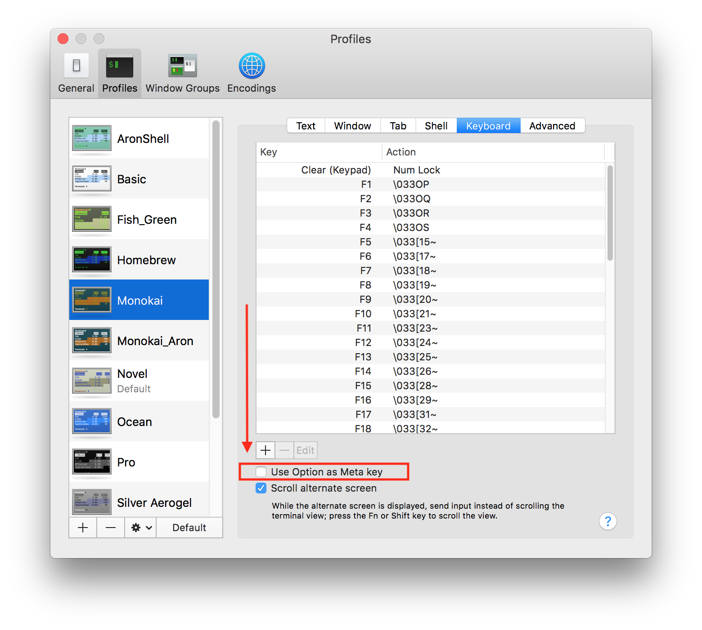

Emacs Evil Mode for Vim Users
The main reason that I did not use Emacs is the Default Key Bindings are hard to press.
For Example, you need to hold the CTRL key all the time when you are
moving around such as Up, Down, Left, Right. On the other hand, Vim can be switched to
'Insert Mode' and you just press k => Up, j => Down, h => Right, l => Left.
But we all know Emacs can do almost anything, it means Emacs can emulate Vim[sorts of]
Yep, There is evil-mode that you can install as package to emulate Vim.
Here are the steps to install SpaceEmacs on MacOS and config evil-mode
1. Your Emacs most likely is out of date on your MacOS.
SpaceEmacs needs at least 2.4 version. I only have 2.2 Emacs on
my MacOS High Sierra when I'm writing.
You can check your Emacs version with 'emacs --version' on command line
2. Update Your Emacs to 2.4 with homebrew as following
brew install emacs-plus --HEAD --with-natural-title-bars
3. Check your Emacs version with 'emacs --version' again after you finish step 2.
Make sure it is 2.4 or up.
Here is mine: GNU Emacs 24.5.1
3. Install packages for evil-mode, put the following code to your .emacs file
(require 'package)
(add-to-list 'package-archives '("melpa" . "https://melpa.org/packages/"))
(package-initialize)
4. Star up your Emacs to install evil-mode package
M-x package-refresh-contents ENTER
M-x package-install ENTER evil
5. Enable evil-mode, add the following code to your .emacs file
(require 'evil)
(evil-mode 1)
6. Start your Emacs now and you should be in evil-mode
Switch back to Normal Emacs Mode with C-z, C-z back to evil-mod
Emacs Meta Key on MacBookPro Setting
Why most people DO NOT use Emacs?
It is painful to use the OLD IDE, yep, it is really OLD IDE.
I use MacBook, first you need to manually map the Meta Key to Option(ALT) on Mac keyboard.
so you can get somethign call M-x
Well, after you map the Meta key to Opiton, then you will encounter anyone stupid problem:
It is impossible to press Option and other key at the same time with one hand.
Yep, you can use left hand to press the Option key but it is not convenient.
Try to figure out how to lighlight the text and copy/paste almost impossible.
1. Press C-x Space C-x Space => highlight the text, Yep, You need to press SIX keys to
select the text, I'm sure there is better way to do it for some Emacs Haskers
2. I'm still have no idea what is "Rectangle Mark disable and enable"
Emacs Meta Key on MacBookPro Setting

Emacs shortcut keys
C-z // exit Emacs
C-x 2 // split window horizonally
C-x 3 // split window vertically
C-x 0 // close current buffer
C-x 1 // maximize current buffer
C-z // goto background fg => back to foreground
C-u M-! // shell_command => Vim:ls
M-x shell // run shell within Emacs
C-v M-v // page up, page down
C-a C-e // move cursor to begin and end of line
C-n C-p // move line down, line up
C-f M-f // move cursor character/word forward
C-b M-b // move cursor character/word backward
C-k M-k // kill all word to end of line or end of sentence
C-_ // undo
C-x C-f // find file
C-x C-s // save file
C-x b // switch buffer
C-x C-b // list buffer
C-x 1 // remove buffer list
C-x 2 // split two windows (horizonal)
C-x o // move to other window
C-x C // exit Emacs
C-x e // evaluate lisp
C-h // help command
M-x package-list-packages i // select package to install